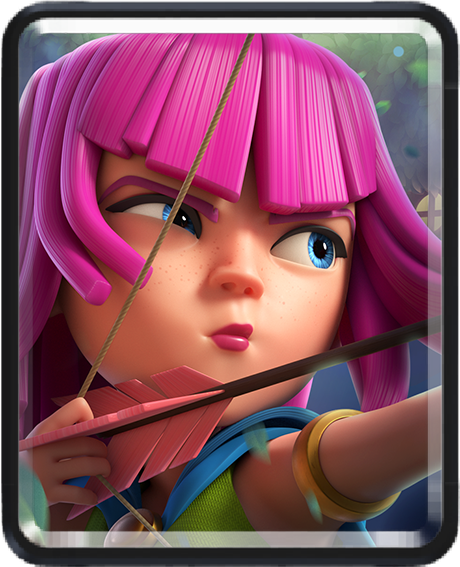

Ever since 2016, there has been over 100 cards!
These cards range from simple things like normal skeletons, all the way to a Skeleton King
And today, were going to talk about all of them
All Champion card ratings are sorted by color
Gold - S tier
Pink - A tier
Blue - B Tier
Green - C Tier
Orange - D tier
Red - F tier
As of September 26-2025, there are 121 cards in the game, common being the first, and the lowest
Archers are one of the first cards you unlock in clash royale. It spawns two archers with medium range and damage. They are really useful with their evo and are really good in early arenas.
Arrows is a spell with a large area and decent damage. Is necessary for certain decks and playstyles and most useful when killing swarms.
Barbarians are one of the most popular troops, even outside of clash royale. Barbarians spawns 5 barbarians that have a decent amount of health and damage. They can be useful aggainst tanks such as the giant and P.E.K.K.A.
Bomber is a low health skeleton with a bomb that deals good damage and splash damage. This troop is mostly paired with tanky win conditions or tanks. This card is useful in the "Pekka, Goblin Giant" Deck.
Cannon is one of the first buildings you unlock in clash royale that deals high damage with medium health. Cannon can be useful against slow tanky win conditions such as the giant and can be as a distraction againsts big pushes. Mainly used in the "Hog 2.6 Cycle" deck.
Fire spirit is the first spirit you unlock in clash royale. Spirits are low health, small and fast units that can be useful for cycle or distractions. Fire spirit deals good damage and splash damage when it reaches an enemy.
Goblins are probably the most popular unit types in clash royale. Goblins are the first goblin-type troop that you unlock. Goblins spawns 4 low health goblins that deal alright damage. Like the barbarians, they can be useful against win conditions and tanks such as the Hog Rider.
Ice spirit is the 2nd out of 4 spirits that you unlock in clash royale. Ice spirit jumps and freezes the enemy for 0.5 seconds with an area effect. Used in most decks and most popular in Hog 2.6.
Knight is one of the first tanks you unlock in clash royale. Knight can be useful against other tanks such as the valkyrie. Knight is usally used to tank for other high dps troops or ranged troops like the X-Bow.
Minions are one the first flying troops that you unlock in clash royale. Minions spawns 3 minions that have a ranged attack with good damage. Minions is known as one of the best defensive cards as its high dps can wipe out non-aerial tanks really fast.
Minion horde is the upgraded versionsof the Minions card that spawns 6 minions isntead of three. Minion horde is one of the most useful high elixir defsensive cards in the entire game.
Mortar is a long ranged building type that deals high damage. Mortar is great when your enemy is on low elixir with no troops on the battle field so it can get high damage on the tower.
Royal giant is a long ranged version of the giant that holds a cannon. The cannon has high damage but a slow attack speed. Royal Giant is great when paired with the monk so he can get amazing tower damage.
Spear goblins are a goblin type troop taht spawns 3 goblins that have medium ranged psears that deal alright damage.
Even though skeletons seem non-threatening, they can be the most useful card in the entire game. Skeletons spawn 3, very low health skeletons that deal bad damge. Skeletons can be used to fully counter troops such as the P.E.K.K.A and Boss Bandit with perfect placement.
Tesla is one of the layer buildings you unlock in clash royale. Tesla is a high health building with the ability to go underground when its not attacking so it can't be spelled.
Zap is a low area, low damage spell that stuns troops for a short time. Zap can be useful for swarms or to delay incoming pushes.
Bats are a aerial troop with low health and decent damage. Bats spawsn 5 bats in a circle that can deal high dps if on a troop for long.
Ice golem is a high health win condition with low damage and slows enemies on death. Like the Knight, ice golem is mainly used to tank or "Kite" troops away.
Goblin gang is a swarm troop that spawns 6 goblins, 3 dagger goblins and 3 spear goblins. This troop is mainly used at the bridge or to kill tank troops.
Elite Barbarians are a medium health high dmaaging card. SPawns 2 barbarians that have more health and deal way more damage than normal barbarians. Elite Barbarians are usually used against slow attacking and high health troops such as the Mega Knight.
Skeleton Barrel is a unique win condition. At first spawns a aerial balloon with medium health, when the ballon reaches a tower or is popped, spawns skeletons.
Rare is the second lowest card rating to this day, but some of these cards are the best in the meta
Barbarian Hut is a medium health building that spawns 3 barbarians on spawn and 3 every 10 second. Barbarian hut has been the most useless card since release and probably will continue to be without a rework.
Bomb Tower is a medium health, ranged splash damage tower that drops a bomb on death. Bomb tower is very good against high elixir psuhes for the splash damage but has too low of health to be viable in te meta.
Cannon Cart is a moving version of the cannon card. After it loses 60% of its health, it will lose its wheels causing it to be immobile in the last place it was. Cannon cart is best used to tkae out tanks and to cause a counter push.
Also known as "Dart Goggins", Dart goblin is the most loved of the goblin heritage. Dart gblin is a fast, decent damage card with long range. Dart goblin can easily take out counter pushes and and swarms like the goblin gang.
Elixir collector is a high health buidling that costs 6 elixir. Elixir collector gives one elixir every 8 seconds and 1 elexir on death for 8 total elixir. Used in most high elixir decks and really good against decks with no spells.
Fireball is a high damage spell that has splash damage and knockback. Fireball is good for tower value if they plavce a troop in the back or to defend tanky pushes.
Furnace is a more unqiue troop than the rest. Before the rework, furncae was building that spawned fire spirits everyu couple seconds. Now its a troop that hits air and ground that also spawns fire spirits every couple seconds.
Goblin hut is a medium health building that spawns goblins whenever an enemy troop gets near it.
Giant is the first tank win condition that you unlock in clash royale. Giant deals a good amount of famage to the tower and is really tanky. Best used with a ranged troop behind it.
Heal spirit is a fast spirit that will heal troops and damage opponents troops nearby. Heal spirit can be best paired with the Elite Barbarians to easily get value.
Hog Rider is the most popular Supercell character also being popular in clash of clans. Hog rider is a high health, fast win condition thatcan jump over water. Hog rider deals high damage to the twoer where most troops can't catch up. Main part of the famous "Hog 2.6" deck.
Inferno tower is a unique high health building where iuts damage goes up the longer it attacks an enemy. Inferno tower is good to stop tanks and medium health troops.
Mini P.E.K.K.A is one pf the first cards that you unlock in the game. Mini P.E.K.K.A is also one of the most loved cards in the game dealing very high damage and medium health. He is really good for stopping tanks and win conditions and to kill counter pushes.
Musketeer is also one of the first cards that you unlock with high damage and a medium projectile range. Musketeer can be good for taking out tanky flying troops like the Balloon and the Lava Hound. SHe also can be useful against slow troops with high health like the Ice Golem.
Rocket is the most expensive spell in the game but is worth the cost. Rocket is a slow, short area projectile that deals insanely high damage. Rocket can be good to take out big pushes or for tower value.
Royal hogs spawns 4 fast hogs that deal little damage, but fast. Royal Hogs can either be very useful or useless depending on how you use them. They can be best used for "Split Lane Pressure" If you place them in the middle of the arena.
Royal recruits is a very expensive card, costing seven elixir but can really come in handy later in the game. Royal Recruits spawns 6 recruits with a shield. You can use them to cause split lane pressure or to defend tanks.
Tombstone is a 3 elixir building that spawns 2 skeletons every couple seconds. SInce tombstone has low health, it could be great to spell bait your opponent. It can also be really annoying for your opponent sincve skeletons keep on spawning so they have to waste elixir.
Valkyrie is considered the best tank ever in Clash Royale. Valkyrie is a high health troop that does decent damage in a circle. Valkyrie can be use to distract or to take out other troops like the witch.
Wall breakers are a low health, high damaging win condition. Wall breakers can do insane damage to the tower if you enemy has nothing to defend it. You can also overwhelm your opponent if you place them in the middle so they have to defend both of them. Wall breakers are best when paired with the miner so he can tank for them.
Zappies are a minauture version of the sparky card that instead stun instead of high damage. Zappies spawns 3 zappies that stun a troop with medium damage every 4 seconds. Zappies can be useful to support troops with defedning or with pushing.
Guards spawns 3 skeletons that come with a shield, guards are good for taankings speells such as the zap and the fireball. Guards can also fully counter a P.E.K.K.A which is a plus 4 elixir trade.
Also known as "Skarmy", Skeleton army spawns a bunch of skeletons that can easily counter any tank but are also easily countered with spells.
Wall breakers are a fast skeleton win condition that spawns 2 very fast skeletons that deal insane tower damage. Wall Breakers are also hard countered by buildings and spells.
Baby Dragon is a mid-health flying troop with decent splash damage. Baby Dragon cvan be great for supporting troops like the Giant and can easily take towers with tanky combos.
Prince is a splash damage prince that deals decent charge damage and good hit damage. Dark Prince also has a sheild that can be used to tank spells and hard hits like the P.E.K.K.A
Hunter can easily be on of the highest damage dealing dealing cards, with his shotgun, he can take out tanks and swarms with his split shot.
Rune Giant is a tanky win condition with low damage. Every couple seconds, she hits her weapons together that buffs 2 nearby troops causing their attack to deal bonus damage.
Balloon is a high health, high damage win condition. Balloon is considered one of the best cards due to ist health and its ability to fly, making it hard to counter. BAlloon is best paired with lumberjack, because while lumberjack tanks and dies, he will drop rage that makes the balloon attack faster and move faster, usally always resulting in damage.
Witch is one of the most used cards in clash royale, which makes total sense. WItch spawns 4 skeletons every 5 seconds which can be good for building pushes or countering troops. Witch also has a staff that deals mid splash damage.
Prince is also one of the most used cards with his high health and charge ability. His charge ability does more than double the damage of his normal attack which makes taking out troops easy and taking towers.
Bowler can be one of the most diverse cards in clash royale. His ability to throw a boulderthat deals high damage and has knockback can be good for taking out troops like the Barbarians.
Executioner is like a bowler and a wizard combined. Executioner throws and axe like boomerang that comes back everytime he attacks. His axe deals high damage and cantake out cards like the Witch with ease.
Electro Dragon is one of the flying dragon type troops that shoots lightning that chains between 3 enemies while stunning them. Great for support and defence.
Giant Skeleton is a high health, medium damage skeleton that attacks one target at a time. On death, he will drop a bomb that deals insanely high damage. He is best paired with clone so he deals double the bomb damage that can take out towers on his own.
Goblin Giant is a win condition that deals decent damage, but has spear goblins on his back that can take out any troops the opponent tries to place to counter it.
A bigger, more tanky, slower version of the mini P.E.K.K.A that deals very high damage. Is good for taking out tanks and pushes but can't do anything against swarms like the Skeleton Army.
Electro Giant is another giant win condition with alright damage, but has an electric circle around him that can take out swarms and stuns troops.
Golem has the highest health any card has ever had in the entire game. A very slow, expensive win condition with insanely high health. He also splits into 2 minature golems when he dies and deals damage upon splitting.
X-Bow is a building type with long range that shoots arrows really fast. Is great when placed at the bridge, especially with a tesla to take out any counter troops.
Goblin Drill is considered a win condition building that can be placed anywhere on the map. Goblin Drill spwns goblins every couple seconds that can take out a princess tower if not defended.
Mirror is the most unique card in clkash royale that can cost any amount of elixir. Mirror is able to clone the troop you last placed for one xtra elixir and can take your enemy by suprise.
Rage is a low elixir low damage spell that buffs any troops that walks in it.
Similiar to the log, Barbarian Barrel throws a barrel a short distance in a straight line dealing decent damage and spawning a barbarian at the end. It can be helepful for wiping swarms or countering pushes.
Goblin Barrel throws a barrel anywhere on the map that spawns 3 goblins when it lands. It can be great for chip damage or baiting the opponents spells.
Spawns 3 slow bolts of lightning that target the 3 highest health troops in the area, deals very high damage.
Freeze summons a large circle that freees any troops that walk in it on deployment. This spell is good when paired with troops like the balloon for extra damage or stalling the opponents incoming push.
Poison spawns a large circle area that deals slow but good damage and slows troops. Poison is great for tower value when your opponent tries to build up a push or when you have to kill many grouped up enemies as well as delaying their push.
Clone clones any troops in a area, but the troops will always be 1 shot.
Tornado summons a tornado the pulls enemies inthe direct center of the spell. Toranado can be really useful to activate king tower or to group enemies up for troops like the Bowler.
Goblin Curse is a low damage spell the "Poisons" the enmy to when they die they turn into a goblin. A great counter against skeleton army but you will always need to use an extra spell to wipe them.
Void creates a dark field that damages all enmies within. Void will do less damage the more enmies that are in the radius making it great against 1 unit and horrible against swarms.
Vines is the most recent spell in clash royale but the best spell. Vines targets 3 of the highest health enemies that stuns them and does good damage. A useful mechanic for vines is that it grounds air troops easily countering decks like lumberloon and lavaloon.
Ice Wizard is a variant of the Wizard card, but instead of fireballs, he shoots a icicle that slows enemies and slows their attacks, but with very low damage. Great for support.
Princess is a troop variant of the Princess tower that has very long range. Princess can shoot from the bridge forcing the enemy to use elixir or a spell.
Like a spell, miner can be placed anywhere on the map with tanky health. EVen though he has very low damage, he is great for chipping and tanking for troops, best paired with wall breakers.
Sparky is a slow, destructive robot that deals the highest damage in the game. Sparky has high health and a slow movement speed, but its all worth it. SParky charges up after 5 seconds to where the next attack shoots a giant ball of electricity causing insane damage with splash damage. He is great for support or making the enemy overspend elixir and overwhelming them.
Lava Hound is a very slow, flying monster win condition with very high health. He does little damage at first, but when he dies, he splits into 6 lava hound pups that can target any troops and without defense can deal high damage.
Like a flying troop version of the inferno tower, inferno dragon shoots a beam of lava thats damage increases the longer it stays on an enemy.
Lumberjack is a very fast, fast attacking and fast damagig troop. He holds an axe that does good damage and attacks very fast. On death, he dops a bottle of rage that buffs nearby troops resulting in good counter pushes.
A speedy bandit that comes with a dash ability that dashes whenever placed far enough from a troop. Bandits dash does more than double the damage of her base attack thats good for a bridge spam deck.
A counterpart to the witch troop, but instead of skeletons, will spawn 2 bats. Also, instead of a ranged splash attack, she has a melee staff that deals high damage but can only attack one target.
Royal GHost is a slow moving ghost that goes invisible if it doesn'ty attack. As a unique ability, he can flot over water making countering him harder than it already is.
The sister of hog rider, but can also attack troops? She is a mix of a normal troop and a win condition, she rides her ram that charges after 2 tiles while she attacks enemy troops. SHe throws a bone like boomerang that slows enemies down making it hard to stop her.
Fisherman is another unique troop that instead of normally attacking, will drag enemies from range that can protect your tanks and win conditions, while also slowing them. When he locks on a tower, he will pull himself toward it.
Magic Archer is a long ranged unit that can pierce through enemies with high damage. When lined up correctly, he can wipe entire pushes out with a couple arrows!
Mega Knight is probably the most notorious card ever in clash royale. Mega Knight is a giant knight with a lot of health and 2 spiky balls on his hands. WHen an eney is far enough, he will jump to them knocking back all enemies in the radius and doing heavy damage.
The only legendary spell in the game is The Log. The Log shoots a log in a wide, straight line knocking back enemies and doing good damage. This can wipe out swarms and wipe anyones push out with just 2 elixir!
Another brother to the wizard typoe troop, Electro Wizard shoots lightning out of his hands that can hit 2 enemies at once if placed correctly and even stun them. Hes good for stopping charge cards like the sparky and the zappies preventing them from using their ability while doing high damage.
Graveyard is another part of the skeleton heritage troops, but is unique compared to them. Its a 5 elixir spell that can be placed anywhere, it will spawn a skeleton every 1 second and eventually can overwhelm the princess tower being able to do a bunch of damage. This card is pretty easy to defend, so your going to need something to tank for the skeletons or have a push incoming.
The last part to the witch family, Mother Witch has a long ranged poison attack that will turn enemys into hogs on death. ITs very easy to scare and overwhelm your opponent if you place her behind a tank so the enemy can't swarm it.
Pheonix just looks like a normal flying troop bird, but instead of immediatly dying, he will turn into an egg that if not destroyed fast enough, will respawn with a little bit of lower health and damage.
Spirit Empress is the most recent legendary realeased in clash royale and is one of the only cards to change elixir cost. For 3 elixir, you can spawn a melee ground version of her that does good damagae, but for 6 elixir, she will fly on a dragon with a high damage ranged attack!
Golden Knight is one of the first three champion cards released in Clash Royale. This card has 2615 health and does 234 damage with a hit speed of 0.9 seconds as of september 2025. This cards unique ability called "Dashing Dash" is to dash to the nearest opponent in 5.5 tiles dealing damage and being invulnerable. This dash can also chain between enemies up to 10 opponents. If an enemy is not near him while he uses it, he gets a movement speed boost until he does dash.
Archer Queen is the 2nd of the first 3 champions released and is the best out of them. She has an decent range, does 327 per hit with a DPS of 182. When she uses her ability, "Royal Cloak" she will go invisible and boost her hit speed for 3.5 seconds. Her ability can be useful when theres a big push coming and can take out big swarms like Minion Horde. While archer queen isnt used in much decks, shes always good in the decks that she is in such as "Hogs EQ".
Skeleton Kings is the last of the 3 first champion cards and is the most unique champion to this day. Skeleton king is a splash damage troop with a medium range and average damagae. Skeleton Kings ability, "Soul Summoning" is the most complex ability and the most difficult to use in Clash Royale. Whenever Skeleton King kills a troop or one of your troops dies, he collects a "soul". This ability will spawn a skeleton for each soul you collect with a max of 16 and a minimum of 6. This ability can either be useful of useless depending on what your opponent has. This ability can be great for tanking for him and for damage on the tower.
Mighty Miner was the 4th champion released in clash royale and is one of the best. Mighty miner uses a drill that goes up in damage if he uses it for long like Inferno Dragon. His ability, "Explosive Escape" causes him to drop a bomb that deals area damage as he digs into the opposite lane. This ability can be useful when he gets overwhlemed by troops and can take out swarms easily. One of the best ways to use this ability is when mighty miner is near a tower and they try to defend, you can activate his ability to take the other tower while they have no elixir.
Monk was the 5th champion released in clash royale. Monk is the most defensive champion card and can be really useful in certain decks. His attack is a 3 hit combo that deals good damage and knockbacks on the third hit. His ability called "Pensive Protection" causes him to levitate in a praying position where he takes 80% less damage and deflects projectils back to where they came from. This ability can be useful if the enemy places a lot of projectile-based troops and can get a lot of value from them. Monk works best when paired with a tank or win condition such as royal giant. If you place monk infront of a tank he can use his ability to help the tank push up and get tower damage.
Little Prince was the sixth champion released in clash royale and is considered one of the most annoying troops. Little Prince is a ranged troop with a crossbow whose attack speed increases the longer he shoots. His ability, "Royal Rescue" spawns a guardian that deals splash damage and knockback on on activation. The guardian stays on the field even after the little prince dies and can be useful to get extra value. This ability is most useful if theres a large swarm coming. His ability can also be used to tank for the tower to get tower damage.
Goblinstein was the seventh champion released in clash royale and is a very unique card. He spawns with a giant frankenstein, goblin-like creature that targets the tower. The main troop itself shoots a small laser that stuns troops on hit and deals little damage. Goblinsteins ability, "Lightning Link" causes a chain of lightning between him and his frankenstein dealing damage and stun to any troops around. This ability can be useful if youre trying to oush and they spawn a swarm troop.
Boss bandit is the most recent champion released in clash royale and is known as the the best card. Boss Bandit is like the bandit card having the same mechanics, but with way more damage, health and dash range. Her ability, "Getaway Grenade" causes her to teleport back and gain invulnerability for a short amount of time. THis ability can be most useful if you want more damage or to dodge attacks.